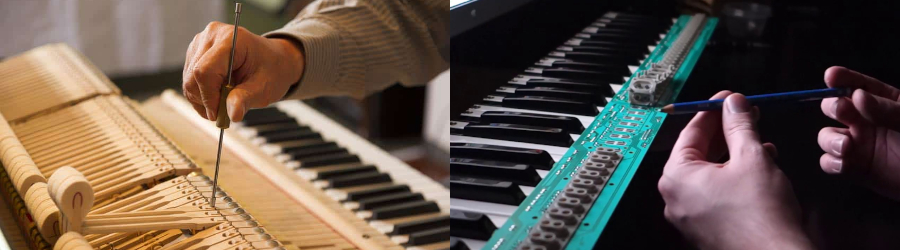

The Analog Specialists offers the high-quality tuning of the upright pianos and the grand pianos, consistent with the global standard A 440 Hz. This tune makes the sound of the instrument being optimal and most carrier. To maintain the upright piano or the grand piano in top condition one should to perform the tune at least twice a year. Just like a car, the upright piano or the grand piano needs a systematical surveys to operate satisfactorily, and to sustain its high value for years. Well-kept musical instrument sounds much better, and better sound quality lets you enjoy the joy and inspiration from its use.
The Analog Specialists performs also a complete renovation of upright and grand pianos. Every upright piano or grand piano restoration is a new challenge. Instruments restored in our workshop during over 30 years of its existence have been counted in the hundreds. For this reason, we have a vast experience and knowledge. We haven't met the instrument which we could not restore its former glory.